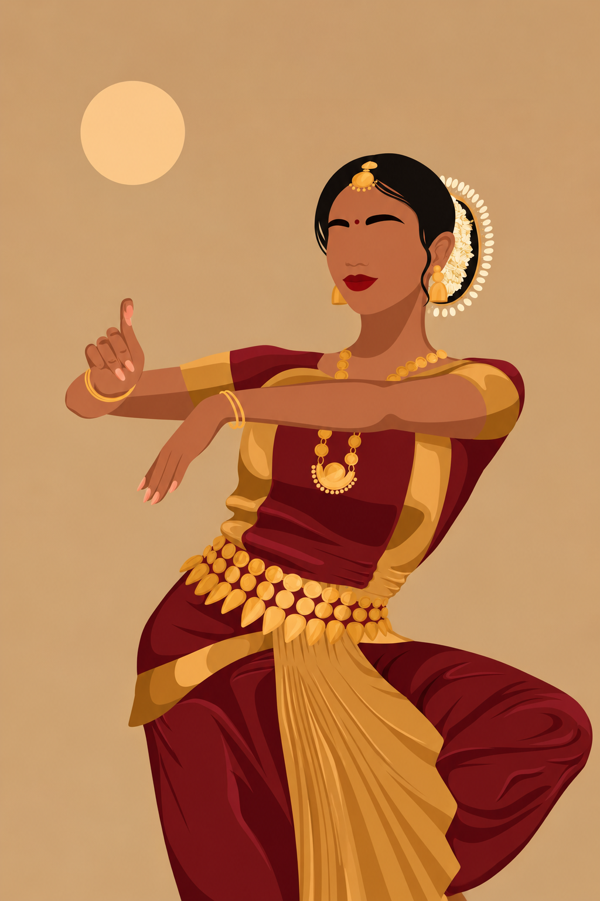
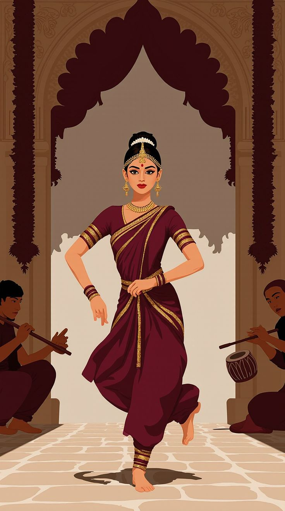
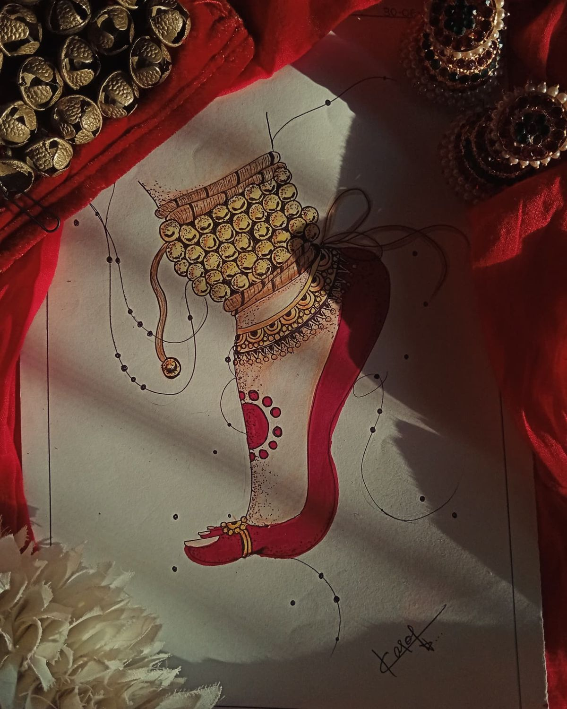

The Meaning Behind Bharatanatyam Hand Gestures
Every mudra in Bharatanatyam carries a meaning. A simple shape of the fingers can become a flower, a bird, a prayer or a feeling, and that is how the dancer tells a story without a single word.

What is a mudra?
A mudra is a hand gesture used in Indian classical dance. In Bharatanatyam, hand gestures are known as hastas, and they form a vocabulary that dancers learn from their very first classes. Some are held with one hand (asamyuta), others need both hands together (samyuta).
Gestures that speak
A few of the first gestures every student meets:
- Pataka – the flag. Flat hand, fingers together. It can show a river, a forest, the wind or a blessing.
- Alapadma – the fully opened lotus. Fingers spread and curved, often used for beauty, a blossoming flower or the full moon.
- Anjali – palms joined together. A gesture of respect and prayer, often used to begin and end a dance.
- Hamsasya – the swan’s beak. Delicate and fine, used for pearls, a thread or a gentle touch.
The same hand shape can mean different things depending on the story, the expression and the movement around it.

More than the hands
Mudras are never performed alone. The dancer’s eyes follow the hands, the face shows the emotion (abhinaya), and the feet keep the rhythm. Together they turn a poem or a legend into a living scene.
Rhythm in every step
While the hands tell the story, the feet and the sound of the ghungroo carry the beat. Learning to keep both in harmony is a big part of the training, and it is what makes Bharatanatyam so rewarding to practise.

Start your own journey
At Chilanka, students begin with the basic hastas and slowly learn how to combine them into expressive dance. Beginners of every age are welcome.
Back to blog